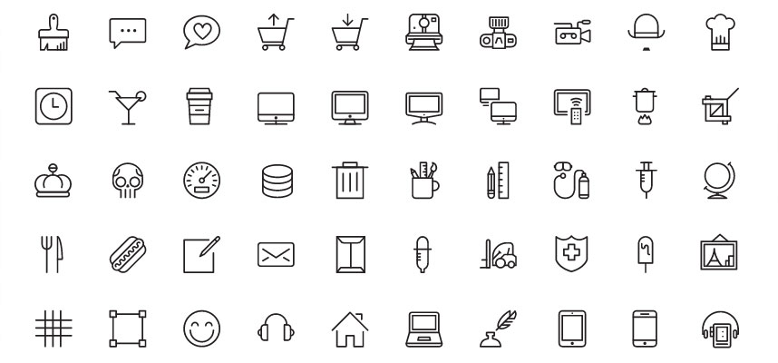
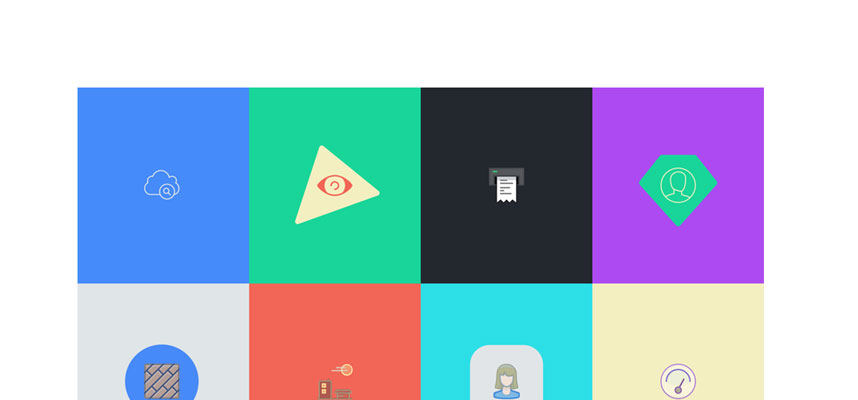
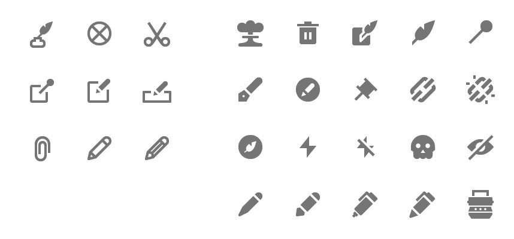
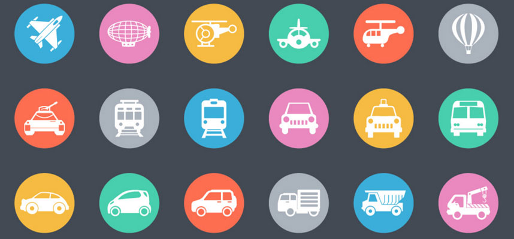
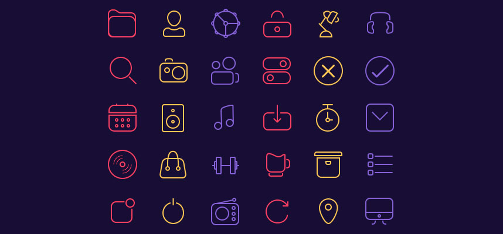
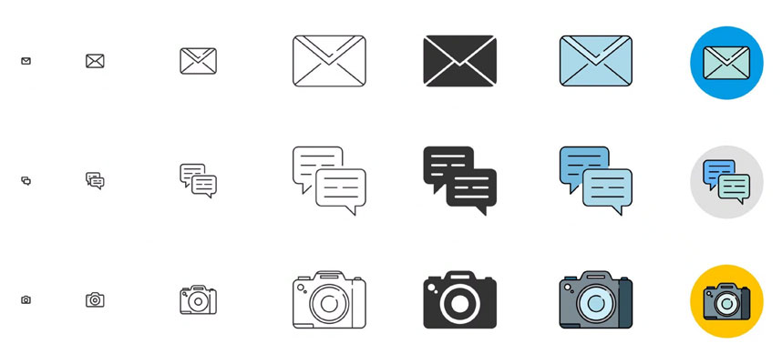
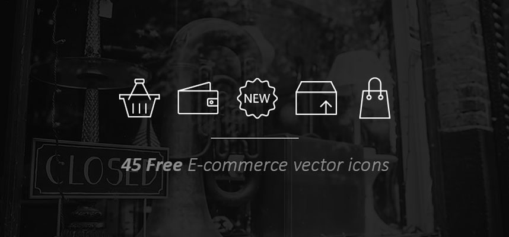

Great free and premium icon sets for your web designs in 2016
Icons are a great way of communicating information quickly and efficiently in a small amount of screen real estate and better yet they’re language independent. In an ideal world we’d spend time crafting and designing custom iconography for each project we do but a lot of the time and budget constraints make this impossible. Fortunately there are plenty of great high quality sets available but it can be a chore to sift through them all to find right one for your needs. Do you need an icon font? svgs? pngs? all of the above? Do you need social media icons as part of the set? Do you need them to scale?
Luckily for you I’ve put together this handy list of sets that we regularly call upon during our web design and web app projects.
I’ve listed them with info on what format they come in, how many icons come in the set and if the whole set is free or just a sub set. Enjoy!
Streamline Icons

Streamline is a massive set of 4,000 icons spanning 97 categories. They offer a sub set of 100 icons for free but it's definitely worth splashing out for one of the premium packs. Whatever your icon needs, Streamline will have you covered.
- Number of icons: 4,000. 100 for free
- Price: $0 - $137
- Format: ai, sketch, svg, eps, pdf, png
Pictos & Pictos Redux

Pictos by Drew Wilson has been a firm favourite of mine for a while and he's recently released a 2.0 version dubbed Pictos Redux which consists of 275 unique glyphs in 3 variations and has a further 825 icons on the way in parts 2, 3 & 4. The original Pictos Classic is still available and can be found here.
- Number of icons: 275 Redux & 800+ Clasic
- Price: Redux $39 per part. Classic from $19 per part or $355 for full kit
- Format: ai, sketch, svg, eps, pdf, png, csh, ttf, woff, eot
Nova - Material Design Style

Designing an Android app? or perhaps you just want to get that Google material design feel on your web site. Whatever the reason you won't go far wrong with this Material Design Style set from Webalys. The Full set consists of 4,000 different icons in 2 styles and better yet there is a set of 350 available for free.
- Number of icons: 4,000. 350 for free
- Price: $0 - $127
- Format: ai, sketch, svg, pdf
45 Free Transport icons

A great little set of icons ideal for any transportation project that you might me working on. Its just a 45 icon set but it has most bases covered for any form of transport.
- Number of icons: 45
- Price: Free
- Format: ai, eps, psd
30 Line Icons

A really nice little set thats got plenty of personality, ideal if your doing a project with a playful feel to it. It's only available in sketch format but it is free :-)
- Number of icons: 30
- Price: Free
- Format: sketch
Responsive Icons

A really nice, interesting set of 1000 icons in 3 styles and 4 sizes. Combined with media queries these can produce some really powerful results. There is a great free selection of 24 with 8 variants.
- Number of icons: 1000. 24 for free
- Price: $0 - $49
- Format: ai, psd, Sketch, csh, svg, png, Webfont
45 Free e-commerce icons

A nice line icon set that will go great with a minimal e-commerce store design. 45 vector in the set in ai, eps & png format.
- Number of icons: 45
- Price: Free
- Format: ai, eps, png